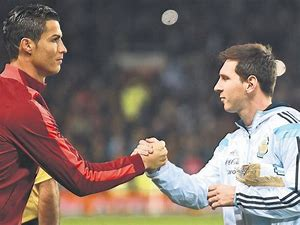

In this modern era, we have come to see and love many soccer players that have dazzled the world with their intelligent display of soccer interlect on the field. We have the greats such as Maradonna, Ronaldinho,Pepe and many more. Nowadays there seems to be two major people on the lips of everyone;people who have very much proved why they are indeed the best and have dominated in the field of soccer for over ten years and counting. By now, if your guess is as good as mine, you should know we are talking about "THE GOATS" of soccer namely Lionel Messi and Cristiano Ronaldo.These were two young players who took the footballing world by storm and have continued to dominate even until now.There is always this debate everywhere you go about who is a better player, and everyone seems to have a different opinion about who stands out more. Most people may argue that Lionel Messi has more balon d'ors and others argue that Cristiano has more trophies at the country level but there is a very interesting time approaching where maybe, just maybe we may see the clear cut difference between these two stars. Can you guess what it is? It's the world cup tournament. Looking at their ages, this might very well be the last World cup each of them plays before they retire. This might be the very last time we see them go all out to win the coveted world cup. We all await to see what happens in Qatar when these two footballing giants clash as well as many great players. I have a feeling that this is gonna be very electrifying.Let's see if any of these two can lift the world cup and cement their place as the best.
MAY THE BEST MAN WIN